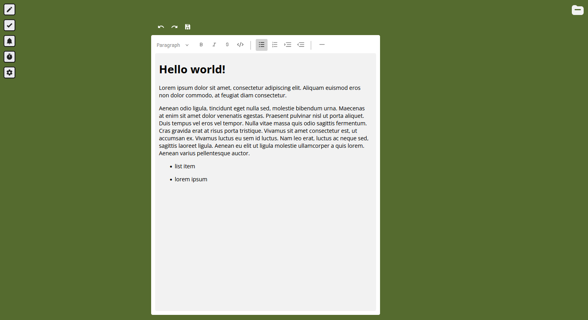

KKB385 Documentation
The concept of this personal project was a graphics-focused web application for note-taking, task management, and document creation and editing. My goal was to create a functional utility that maintained a visually engaging environment for users to have fun with and enjoy while working. This was achieved through the JavaScript framework, Svelte, a rich text editor called Tiptap, and a whole lot of CSS to bring it all together.
Overall, through approximately 40 hours of work, the aim of my project was both to add content to my professional portfolio as well as explore creating a software desktop application whilst expanding my skillset through learning a JavaScript framework.
The idea I came up with was to create something that blended both a documentation editor, like Microsoft Word or Google Docs, with visually appealing elements. My main inspirations were cosy utility games and applications such as Virtual Cottage and Chill Corner that allow you to idle in a relaxing environment whilst providing multiple tools that help boost productivity.
I’ve had this idea for a while now, and did try to create a smaller version of it some years ago, but didn’t have to skills nor motivation to complete it. Now, with my better knowledge of JavaScript and Node.js, I thought I would attempt to make this, whilst giving a go at learning a JavaScript framework and building a web application.
I started off by scoping my project, planning out the features I wanted and creating a rough outline of the project's planned timeline from then to the submission date over the course of six weeks.
Below are some of the features that I had previously planned to include.
- Document creation and editing
- Create, update, and delete document files
- Export documents as document files or PDF files
- Include information such as:
- Time created and time updated
- Title
- Folder location
- Be able to format documents (bold, italics, underline, dot points, ordered list, headers, fonts, font size, font colour, alignment, highlight/background text colour)
- Note-taking and scratch-pad
- Create, update, and delete text/markdown files
- Include information such as time created and time updated
- Simple formatting tools (bold, italics, dot points)
- Tasks and to-do lists
- Set the status of tasks (complete/incomplete)
- Group tasks in collections
- Order tasks
- Pomodoro timer (optional/extra feature)
- Reminders and alerts
- Include information such as:
- Title
- When
- Repeat
- Graphics and environment settings (semi-optional/extra feature)
- Themes
- Music
- Ambience
I created a mood board full of visual inspiration to help me develop a stronger idea of the vibe and environment that I wanted to communicate. I wanted something fun and cute, with bright but soft, warm colours that gave it a cosy feeling.
Before and whilst creating my code, I ended up putting a lot of my time into research which ended up taking a lot more time than I had initially thought. A lot of the study started with the JavaScript framework, React, and the desktop application builder framework, Electron.
However, after much trial and error, I realised that learning React was a steep curve and something that I didn’t have the time for for a project like my own, so I instead switched over to a different JavaScript framework, called Svelte, which seemed a lot easier and smoother to learn. Not only that, but it seemed to be better suited for creating smaller projects like my own.
I discarded Electron, purely because I wanted to focus on finishing the main features before turning it into an actual software application, however, the knowledge I gained from experimenting with the application builder, Electron, has given me the confidence to implement that feature later on.
Additionally, I researched what rich text editor to use and chose one called Tiptap for its feature-rich and easy implementation, as well as for its widely customisable UI that I could build up from scratch.
I implemented some cute sticky note components using Svelte that can be dragged around on the screen, as shown below.
I also researched databases and ended up choosing SQLite to store data, as SQL seemed to be the most mainstream type of database management system for me to learn and was lightweight. I then used the database engine to add document file-like features that could be accessed through the top right folder icon.
Finally, after many roadblocks and fumbling around with code and research, with my project properly set up, development was a lot smoother from then on.
As of now, the project has greatly built up my knowledge of JavaScript frameworks and has allowed me to explore and experiment with application builders. I’ve also considerably improved my understanding of backend development and SQL databases, which, while they weren’t a part of my goals, are a nice extra skillset to have learnt within my industry. And while the project isn’t quite ready or up to my standards to be fully shown on my portfolio, I hope to continue this project further outside of university after the semester finishes.
Below is the link to the GitHub repository that my project is stored in. Any future updates following this documentation can be seen there.
GitHub repository
Social media
Portfolio